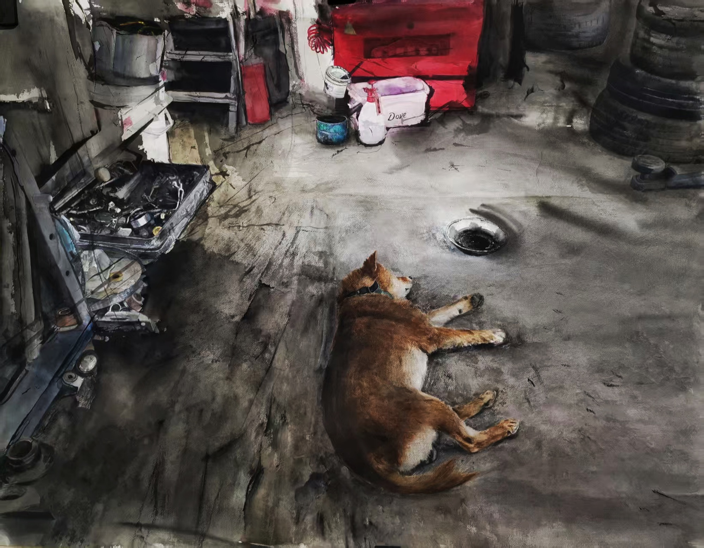

Afternoon Nap
午睡时光

- Artwork ID / 作品编号
- KW-W-000010
- Year / 年份
- 2026
- Medium / 媒介
- Watercolor on paper / 纸本水彩
- Dimensions / 尺寸
- 82 × 112 cm (H × W / 高 × 宽)
About the work / 作品介绍
Afternoon Nap was completed in 2026. The painting portrays a dog sleeping peacefully inside an ordinary repair workshop at noon. Scattered tools, tires, and daily objects describe an authentic working environment, while the resting dog brings a quiet sense of balance to the scene. Rather than dramatizing the subject, the work celebrates the poetry hidden in everyday life. Through the transparency and layered qualities of watercolor, light, air, and time gently unfold, revealing the harmony between labor and daily living.
《午睡时光》完成于2026年。作品描绘了一间普通修车铺内，一只狗在午后的光线中安静熟睡。散落的工具、轮胎与生活用品构成真实而朴素的劳动空间，而狗的安然入睡，使整个画面获得了难得的宁静。作品没有刻意营造戏剧冲突，而是记录平凡生活中最自然的一刻。在我看来，真正的诗意往往诞生于这些未经修饰的日常场景。水彩丰富的层次与透明特性，使空间中的光线、空气与时间缓缓流动，也让劳动与生活在同一空间中达到平衡。